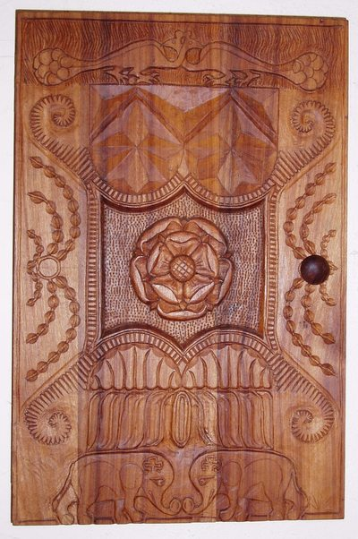
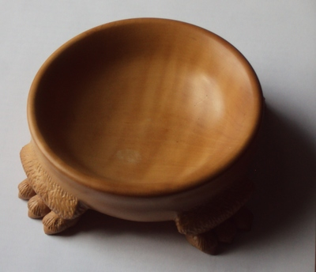
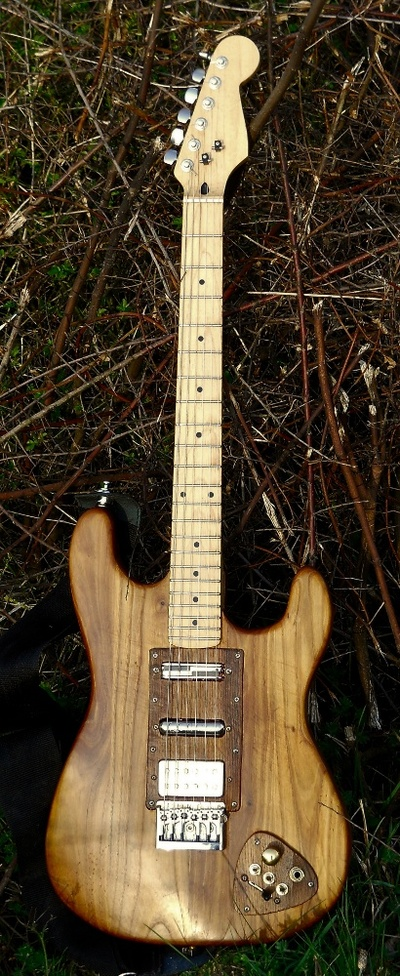
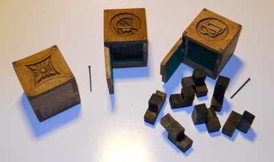
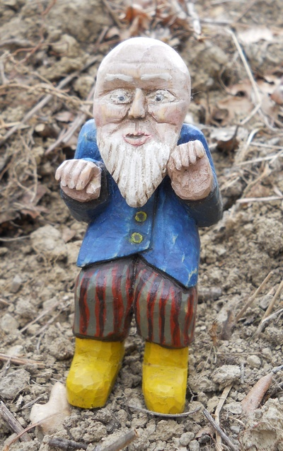
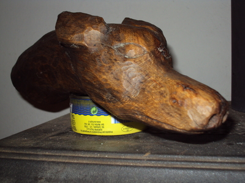
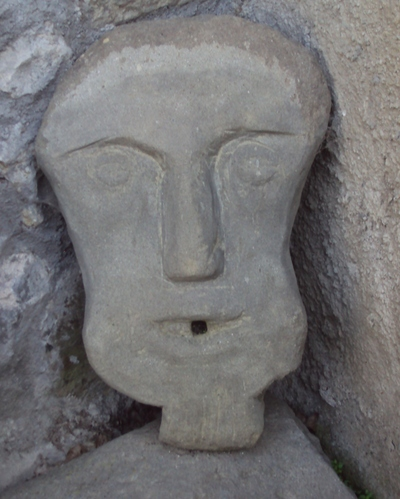

{kind=link}
{kind=link}
{kind=link}
{kind=link}
{kind=link}
{kind=link}
{kind=link}
{kind=link}
{kind=link}
{kind=link}
{kind=link}
{kind=link}
{kind=link}
{kind=link}
{kind=link}
{kind=link}
{kind=link}
{kind=link}
{kind=link}
{kind=link}
{kind=link}
{kind=link}
{kind=link}
{kind=link}
{kind=link}
{kind=link}
{kind=link}
{kind=link}
{kind=link}
{kind=link}
{kind=link}
{kind=link}
{kind=link}
{kind=link}
Woodcarving Gallery
Some of the things I've made.
I'm a big fan of medieval sculpture, no doubt in part because where I grew up ( Tideswell) there was a wonderful church " The Cathedral of the Peak" which was full of exceptional woodcarvings by the Hunstone family. As a kid I always had a penknife at hand and would often whittle rough bits and pieces. I continued occasionally hacking at bits of wood into adulthood, but only got settled enough to start accumulating decent tools when I was about 30. Even now I don't spend enough time carving wood to get particularly skilled (as the end results demonstrate), but I find it a very satisfying pastime all the same.
Spice Cupboard

Beech(? )
My first proper piece. Carved on my mother's kitchen table from an old school desk which was horrible, really dry and splintery wood. The Tudor Rose was taken straight out of Whittling and Woodcarving by E.J. Tangerman, a fun book from 1936. I assume I got the peacocks and elephants from a bestiary, the patterns were made up.
Bowl

Pear, 12cm diameter
The piece of which I'm most proud, it just worked. My own design (though putting animal's feet on things is hardly original). Turned on a clunky hand drill jig thing, before I had a proper lathe. By then I did at least have a little workshop, the cellar of the house in Buxton.
Book Rack
Oak
Haven't got a photo of the whole thing (it's at my mother's), just these end panels. I think I got the figures from pictures of old church woodcarvings, the rest of the design made up. Still not quite finished. The round boss thing should probably be a rose.
Chalice
Chestnut
Crude and chunky, but I like it for that. Turned from an old log.
Gavel
Chestnut(?)
Made as a gift. The wood was scraps from an old barrel - I think it's chestnut although the colour's much lighter than the other pieces I've used.
Mandolin Restoration
I'd wanted a mandolin for years but never enough to buy one. Then I spotted the remains of one on Castelnuovo market (about a tenner) and couldn't resist. Remarkably it sounds quite good.
The Vinocaster

The body made from recycled wine barrel wood. I've written up how it was made.
Puzzle Boxes

{kind=link}
{kind=link}
Chestnut (recycled wine barrel)
Made for Christmas presents (my Dad and danbri, 2012), plus the prototype.
Lots of mistakes on the prototype - see gappiness of joints on left-hand pic. Other two better but still plenty flawed (but soo authentic :). Carved a stylized flower on proptotype (which came out rather well) and monograms on the pressies. To open the box you need to remove the correct pin and figure out where the hinge is. Inside a Soma Cube, chestnut again but stained with steel wool & vinegar. Finished with linseed oil then beeswax polish.
The chestnut is a bit of a pain to carve, very well-defined grain so detail tricky. The "rivets" (and hinge & key pin) made from regular nails, modified using a blowtorch and big hammer.
Creepy Man

Softwood, oil paint
I thought I'd have a crack at whittling some softwood for a change. No idea what wood it is, some kind of conifer probably. I didn't previously like the painted, slightly naive folk art kind of style, but this was a lot of fun so I'll probably do some more. I based the design on one from a book (How to Carve Wood, Richard Butz). It was meant to be an Adirondack Hermit (!) but due to my clumsiness in following the instructions he soon deviated. He was virtually entirely carved with just one knife - a Mora Erik Frost 120 (which is a wonderful knife, and I found out after I'd bought it that Amazon stock them too).
I thought working with softwood would be a lot quicker - it still took ages.
The painting I did over several nights, giving each bit time to dry. Initially he was a bit too bright and shiny so I gave him a coat of burnt umber and wiped it off. Then he looked suitably grubby. I finished off with a layer of linseed oil, not sure that was a good idea. Gave him a good rub-down afterwards, it took some of the paint off. No matter, it just makes him look a bit weatherworn.
Grumpy Cat Spoon
Beech, ebony inlay
Another little folk arty experiment. While looking around whittling sites an awful lot seem to go for making spoons. I thought I'd make something a bit decorative. Rather than the usual greenwood I opted for some beech from a log I'd put aside a few years ago. The middle I turned, most of the rest I whittled with a knife, using homemade fine gouges to help with the details. Getting the face even remotely credible was really difficult, cats' faces just aren't flat!
I happened to have a little lump of ebony I bought years ago from Craft Supplies, so I tried the eye inlay thing (inspired by something similar in a book on netsuke). Fiddly but effective.
Dog Head

Beech
This I made not long after we moved to Italy. When I say made, I got as far carving as this when I ran into a major snag - there was a nasty knot/split just where one of the eyes should be. So I abandoned it, leaving it in the yard. Several years later the weather (and probably mould) had had a wonderful effect on the colour. So I brought it back in, rubbed off the surface crud, gave it a coat of linseed oil and then finally polished with beeswax. You really wouldn't know it was beech, more like old oak now. The fault around the eye has become a feature :)
Owl
River rock
Ok, not wood, but this seemed as good a place to put it as any. Design taken from an old church bench-end carving.
Head

River rock
Not wood and I don't really like the way it turned out. I've got quite a few things like that, along with loads of unfinished and/or abandonded pieces.